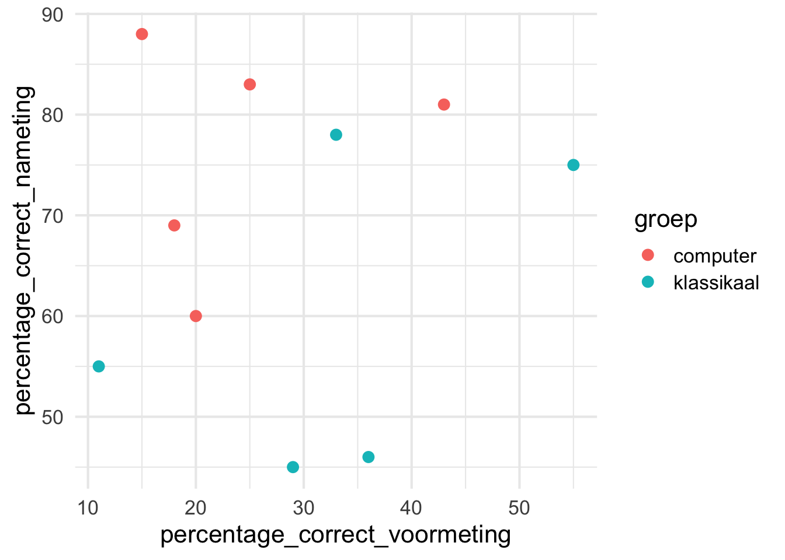

# Aanroepen package tidyverse
library(tidyverse)
# Inlezen van de data uit het bestand Dataset.txt uit de map datasets (N.B. deze code gaat ervan uit dat je het bestand Dataset.txt niet naar de hoofdmap hebt gekopieerd)
uitdrukkingen <- read_delim("datasets/Dataset.txt")Practicum 1
Werken met data in R
Leerdoelen
Kennismaken met (data in)
RInlezen van databestanden voor bewerking in
RBewerken van variabelen in
R
Voorbereiding
Lees hoofdstukken 1 t/m 3 uit het dictaat. De benodigde R-functies zijn te vinden in het dictaat. Functies die niet in het dictaat besproken worden, worden gegeven in de opdracht. Lees ook de algemene richtlijnen voor practica door.
Introductie
Een taalwetenschapper wil weten of training met een computerprogramma helpt bij het leren van vaste uitdrukkingen door tweedetaalleerders van het Nederlands ten opzichte van een klassikale methode. Het voordeel van het computerprogramma is dat deelnemers gedetailleerde feedback krijgen, terwijl dit klassikaal een stuk moeilijker is. De onderzoeker verwacht daarom dat mensen die met het computerprogramma oefenen meer Nederlandse uitdrukkingen kennen, dan mensen die hebben gewerkt via een klassikale methode.
Om dit te onderzoeken werden Duitse leerders van het Nederlands onderworpen aan een voormeting (pre-test) om hun kennis van Nederlandse uitdrukkingen te testen. Vervolgens werd de groep participanten in tweeën verdeeld. Groep 1 mocht oefenen met het computerprogramma, terwijl groep 2 klassikaal ging oefenen met uitdrukkingen. Na een week van oefenen werden de deelnemers opnieuw getest op hun kennis van uitdrukkingen. In deze practicumopdracht ga je werken met de data van deze onderzoeker.
Let op
Sla je script regelmatig op, zodat je geen code kwijtraakt. Klik hiervoor op het floppy-disk-symbool of gebruik de sneltoetsen Ctrl + S/cmd + S.
Probeer het eerst zelf!
Bij de opdrachten vind je naast een beschrijving van de vraag ook een Hint en de Code. Dit om je te helpen als je even niet verder komt. Hoe verleidelijk het ook is om meteen naar het antwoord te gaan, doe dit niet. Houd je aan de volgorde: probeer het eerst zelf, lukt dat niet gebruik de hint, mocht je dan nog vastzitten en er echt niet uitkomen ga dan pas naar het antwoord. Dit gaat je op de lange termijn ontzettend helpen.
Het inlezen van de data
Zorg het bestand Dataset.txt wordt ingelezen in R als datatabel en beschikbaar is voor verwerking onder de naam uitdrukkingen. Als het goed is zul je in het venster Environment, rechtsboven in RStudio, nu een kopje Data vinden met daaronder het dataframe uitdrukkingen.
Gebruik de functie read_delim(), zie sectie 3.2. Zorg wel dat je het package tidyverse hebt geladen (en dat het geïnstalleerd is, zie sectie 2.3.
Het verkennen van de data
Nu we de data beschikbaar hebben als datatabel in R, kunnen we ons gaan richten op de inhoud: hoe zien de data er precies uit?
Eerste zes rijen zichtbaar maken
Maak de eerste zes rijen van het databestand zichtbaar om te kijken hoe de data eruitzien.
Gebruik de functie head(), zie sectie 3.2.1.
# Eerste zes rijen zichtbaar maken
head(uitdrukkingen)# A tibble: 6 × 6
Proefpersoon Geslacht Groep Geboortejaar PercentageCorrect_Voormeting
<dbl> <chr> <dbl> <dbl> <dbl>
1 1 M 1 1988 20
2 2 V 2 1992 36
3 3 M 1 1995 15
4 4 M 2 1997 55
5 5 V 1 1987 43
6 6 V 2 1999 11
# ℹ 1 more variable: PercentageCorrect_Nameting <dbl>Aantal rijen en kolommen
Hoeveel rijen (observaties) en kolommen (variabelen) telt de dataset? Gebruik hiervoor de relevante R-functies
Gebruik de functies nrow() en ncol(), zie sectie 3.1.
# Aantal rijen en kolommen vaststellen
ncol(uitdrukkingen)[1] 6 nrow(uitdrukkingen)[1] 10De functie View()
Een andere manier om de dataset zichtbaar te maken is via de functie View().Deze functie is echter alleen te gebruiken in RStudio. Maak de dataset zichtbaar met deze functie.
#Dataset zichtbaar maken
View(uitdrukkingen)Namen van de variabelen
De namen van de variabelen in de aangeleverde dataset voldoen niet aan onze richtlijnen. Wat is het probleem?
Zie Secties 3.2.1.
De namen maken geen gebruik van snake_case. Er worden hoofdletters gebruikt en soms worden inhoudswoorden aan elkaar geschreven.
Pas de namen van de variabelen de datatabel aan zodat ze voldoen aan onze richtlijnen.
Je kunt dit handmatig doen met de functie rename() of met de functie clean_names() uit het package janitor. Zie Sectie 3.2.1.
# Aanpassen namen variabelen
uitdrukkingen <- janitor::clean_names(uitdrukkingen)# alternatief handmatig
uitdrukkingen <- rename(.data = uitdrukkingen,
proefpersoon = Proefpersoon,
geslacht = Geslacht,
groep = Groep,
geboortejaar = Geboortejaar,
percentage_correct_voormeting = PercentageCorrect_Voormeting,
percentage_correct_nameting = PercentageCorrect_Nameting
)Meetniveaus van de variabelen
Beschrijf de meetniveaus van alle variabelen in het databestand en geef kort aan waarom je voor de betreffende meetniveaus gekozen hebt.
Details van variabelen opvragen
Gebruik de functie str() om de details van de variabelen in het databestand op te vragen. Op deze manier kun je zien van welk type de variabelen volgens R zijn. Kloppen deze door R toegekende typen met de meetniveaus uit de vorige vraag?
Zie Tabel 3.1. Zie ook secties 1.5-1.9 uit SfL voor de verschillende type variabelen in R.
# Details variabelen opvragen
str(uitdrukkingen)spc_tbl_ [10 × 6] (S3: spec_tbl_df/tbl_df/tbl/data.frame)
$ proefpersoon : num [1:10] 1 2 3 4 5 6 7 8 9 10
$ geslacht : chr [1:10] "M" "V" "M" "M" ...
$ groep : num [1:10] 1 2 1 2 1 2 1 2 1 2
$ geboortejaar : num [1:10] 1988 1992 1995 1997 1987 ...
$ percentage_correct_voormeting: num [1:10] 20 36 15 55 43 11 18 29 25 33
$ percentage_correct_nameting : num [1:10] 60 46 88 75 81 55 69 45 83 78
- attr(*, "spec")=
.. cols(
.. Proefpersoon = col_double(),
.. Geslacht = col_character(),
.. Groep = col_double(),
.. Geboortejaar = col_double(),
.. PercentageCorrect_Voormeting = col_double(),
.. PercentageCorrect_Nameting = col_double()
.. )
- attr(*, "problems")=<externalptr> Bewerken van de data
Soms worden variabelen door R niet herkend als het juiste type, of soms ontbreekt er informatie of wil je zelf nieuwe variabelen toevoegen. Gelukkig heb je de mogelijkheid om deze informatie in R aan te passen of toe te voegen. Let wel op dat dit goed gaat, want anders kun je bij latere analyses in de problemen komen.
Aanpassen van het type van een variabele
Verander de variabele proefpersoon in een factor, zodat het door R als een categoriale variabele herkend wordt. Doe hetzelfde voor de variabelen groep en geslacht.
Gebruik de functie mutate() in combinatie met as.factor(), zie sectie 3.2.2.
# Aanpassen datatype variabelen
uitdrukkingen <- mutate(
.data = uitdrukkingen,
proefpersoon = as.factor(proefpersoon),
groep = as.factor(groep),
geslacht = as.factor(geslacht)
)
# Controleren
str(uitdrukkingen)tibble [10 × 6] (S3: tbl_df/tbl/data.frame)
$ proefpersoon : Factor w/ 10 levels "1","2","3","4",..: 1 2 3 4 5 6 7 8 9 10
$ geslacht : Factor w/ 2 levels "M","V": 1 2 1 1 2 2 2 2 1 2
$ groep : Factor w/ 2 levels "1","2": 1 2 1 2 1 2 1 2 1 2
$ geboortejaar : num [1:10] 1988 1992 1995 1997 1987 ...
$ percentage_correct_voormeting: num [1:10] 20 36 15 55 43 11 18 29 25 33
$ percentage_correct_nameting : num [1:10] 60 46 88 75 81 55 69 45 83 78Toevoegen namen van levels
Voeg nu de bijbehorende namen van de levels aan de variabele groep toe: computer en klassikaal.
Gebruik de functie fct_recode(), zie Sectie 3.2.2.
# Toevoegen van namen aan levels
uitdrukkingen <- mutate(uitdrukkingen,
groep = fct_recode(groep,
computer = "1",
klassikaal = "2"
)
)
# Controleren
str(uitdrukkingen)tibble [10 × 6] (S3: tbl_df/tbl/data.frame)
$ proefpersoon : Factor w/ 10 levels "1","2","3","4",..: 1 2 3 4 5 6 7 8 9 10
$ geslacht : Factor w/ 2 levels "M","V": 1 2 1 1 2 2 2 2 1 2
$ groep : Factor w/ 2 levels "computer","klassikaal": 1 2 1 2 1 2 1 2 1 2
$ geboortejaar : num [1:10] 1988 1992 1995 1997 1987 ...
$ percentage_correct_voormeting: num [1:10] 20 36 15 55 43 11 18 29 25 33
$ percentage_correct_nameting : num [1:10] 60 46 88 75 81 55 69 45 83 78Nieuwe variabele proportie_correct_voormeting toevoegen
De variabele percentage_correct_voormeting geeft het aantal goede antwoorden op de voormeting weer als een percentage. Maak een nieuwe variabele proportie_correct_coormeting waarin het aantal goede antwoorden wordt weergegeven als een proportie. Wat is volgens R het type van deze nieuwe variabele? Leg uit waarom R voor dit type kiest.
Zowel percentage als proportie geven het deel van een geheel weer. Het verschil is dat een percentage loopt van 0-100 en een proportie van 0-1. Voor het aanmaken van nieuwe variabelen gebruiken we de functie mutate(), zie Sectie 3.2.2.
# Toevoegen variabele met proportie
uitdrukkingen <- mutate(uitdrukkingen,
proportie_correct_voormeting = percentage_correct_voormeting/100
)
# Controleren type van de variabele
str(uitdrukkingen)tibble [10 × 7] (S3: tbl_df/tbl/data.frame)
$ proefpersoon : Factor w/ 10 levels "1","2","3","4",..: 1 2 3 4 5 6 7 8 9 10
$ geslacht : Factor w/ 2 levels "M","V": 1 2 1 1 2 2 2 2 1 2
$ groep : Factor w/ 2 levels "computer","klassikaal": 1 2 1 2 1 2 1 2 1 2
$ geboortejaar : num [1:10] 1988 1992 1995 1997 1987 ...
$ percentage_correct_voormeting: num [1:10] 20 36 15 55 43 11 18 29 25 33
$ percentage_correct_nameting : num [1:10] 60 46 88 75 81 55 69 45 83 78
$ proportie_correct_voormeting : num [1:10] 0.2 0.36 0.15 0.55 0.43 0.11 0.18 0.29 0.25 0.33Nieuwe variabele verschil_metingen toevoegen
Maak nu een nieuwe variabele in het databestand met de naam verschil_metingen. Deze variabele moet het verschil weergeven tussen de nameting en de voormeting.
Ook hierbij kun je de functie mutate() gebruiken, zie Sectie 3.2.2.
# Variabele verschil_metingen aanmaken
uitdrukkingen <- mutate(uitdrukkingen,
verschil_metingen = percentage_correct_nameting - percentage_correct_voormeting
)Nieuwe variabele leeftijd toevoegen
Een van de variabelen in het databestand is geboortejaar. Voeg een nieuwe variabele leeftijd toe aan het databestand. Het experiment is afgenomen in 2017. Bereken automatisch de leeftijd op basis van het geboortejaar van de participanten met behulp van R.
En ook dit kan met de functie mutate(), zie Sectie 3.2.2.
# Toevoegen variabele leeftijd
uitdrukkingen <- mutate(uitdrukkingen,
leeftijd = 2017 - geboortejaar
)Een grafiek maken
Laten we de functionaliteit van het tidyverse meteen ook maar gebruiken om een grafiek te maken. We maken een grafiek waarin we het percentage correct op de nameting uitzetten tegen dat van de voormeting en we geven elk datapunt een kleur afhankelijk van de groep waartoe deze behoort. We gebruiken hiervoor ggplot2, het populairste onderdeel van tidyverse waar je in de rest van de cursus nog veel over gaat leren (vanaf Hoofdstuk 5).
Hieronder vind je een deel van de code om de grafiek te maken, alleen de variabelen ontbreken nog. Kopieer onderstaande code, voeg de variabelen op de juiste puntjes (…) in en voer de code uit. Bekijk het resultaat: zie je verschil tussen de twee groepen?
#deel van de code voor een grafiek waarin percentage_correct_nameting wordt uitgezet tegen percentage_correct_voormeting
uitdrukkingen %>%
ggplot(aes(x = ...,
y = ...,
colour = ...)) +
geom_point(size = 3) +
theme_minimal(13)In deze grafiek zetten we variabele Y uit tegen variabele X. De kleur willen we laten variëren per groep waartoe de leerder behoort.
#code voor een grafiek waarin percentage_correct_nameting wordt uitgezet tegen percentage_correct_voormeting
uitdrukkingen %>%
ggplot(aes(x = percentage_correct_voormeting,
y = percentage_correct_nameting,
colour = groep)) +
geom_point(size = 3) +
theme_minimal(16)